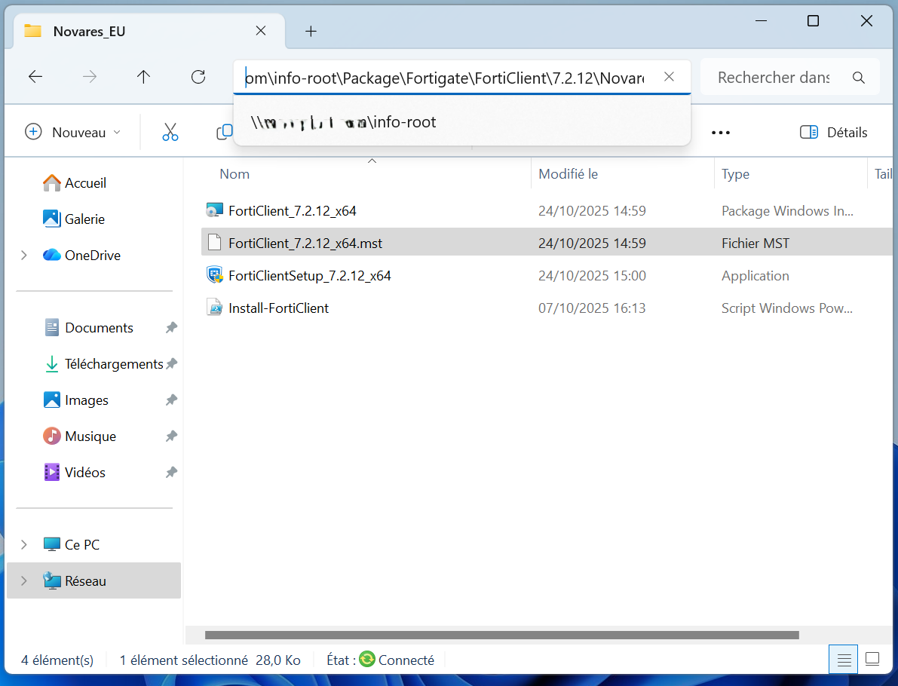
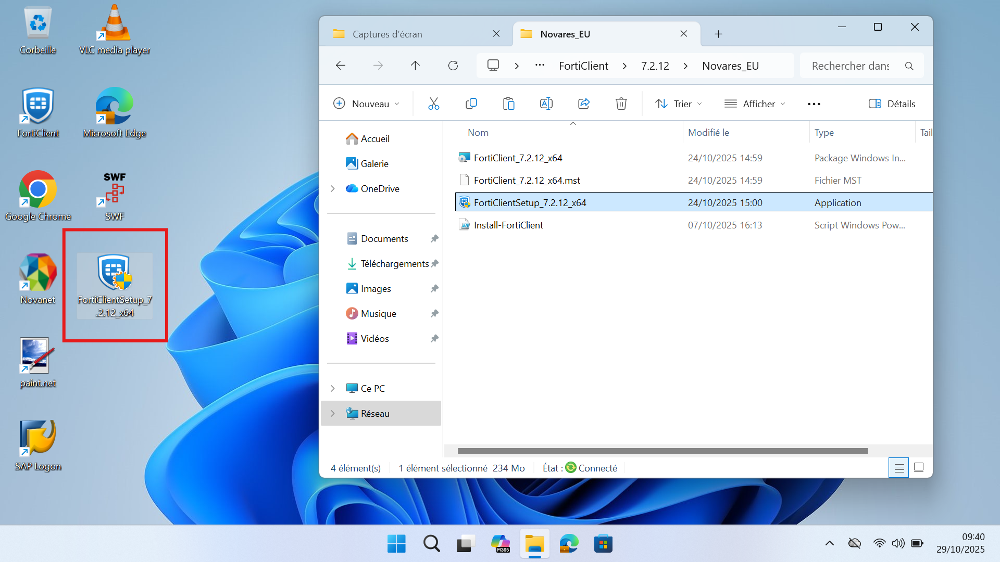
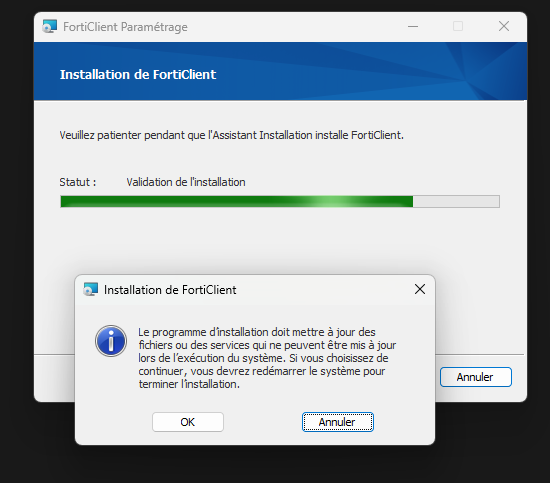
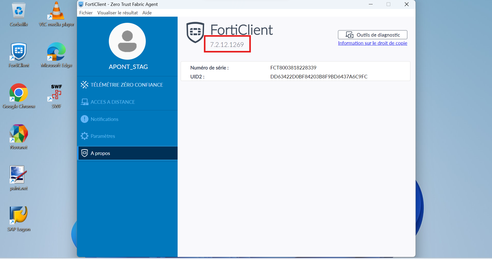

📋 Contexte de la procédure
Cette procédure décrit les étapes à suivre pour mettre à jour le client VPN de la version 7.2.11 vers 7.2.12 en utilisant un accès réseau via UNC (Universal Naming Convention). L'objectif est d'assurer la compatibilité et la sécurité du service VPN utilisé dans l'environnement de travail.
⚙️ Procédure technique détaillée
Connexion via l'UNC
Accédez au partage réseau contenant le package de mise à jour VPN.
Assurez-vous d'avoir les droits d'accès nécessaires avant de poursuivre.

Copie du package VPN
Copiez le dossier VPN_7.2.12_Setup sur votre poste local (ex. Bureau ou Téléchargements).

Installation de la mise à jour
Exécutez le fichier setup.exe en tant qu'administrateur.
Suivez les instructions de l'assistant d'installation et laissez la mise à jour remplacer la version précédente.

Vérification de la version
Après l'installation, ouvrez le client VPN et vérifiez la version installée.

Redémarrez le poste si nécessaire pour finaliser l'installation.
Validation et documentation
Testez la connexion VPN avec vos identifiants habituels. Si tout fonctionne, mettez à jour le registre des versions installées pour le site concerné.
✅ Connexion réussie
✅ Version 7.2.12 affichée
✅ Aucun message d'erreur détecté